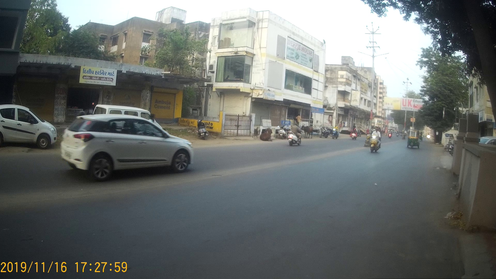

Single frame SVM
This is our simplest approach where we extracted features from individual frames of the video and trained classification model to predict if a particular frame is safe/unsafe for crossing road.
Feature Extraction
For extracting features from a particular frame, we
divide the frame into 6 regions as shown
above. It is very intuitive because even we as
humans, when crossing roads,
consciously/unconsciously consider information about
vehicles in different regions of our field of
vision. We extract following features from each of
the 6 regions:
- Number of vehicles in the region
- Total area covered by vehicles in the region
- Distance(from origin) of the vehicle closest to the origin
Classification Model
Data Preprocessing tasks:
- Train-test split (using 80 videos for training, 24 for testing)
- Generating features and labels dataframe
- Feature Scaling using MinMax Scaler
- We used SVM(Support Vector Machine) to train a classification model to predict if a frame is safe/unsafe.
- Precision : 0.73, Recall : 0.78 (on train data)
- Precision : 0.51, Recall : 0.70 (on test data)
- Mean average precision on test data: 0.57
- Python implementaion for the same can be found here.
Sample Prediction Outputs


This is an advancement over the above approach where we have made an attempt to improve our feature extraction logic.
Feature Extraction
The feature extraction logic is same as that of
previo approach, with just one difference as per the
direction of vehicles. As seen from the
above figure, for crossing road, the information of
vehicles on the other side of the divider (i.e., the
vehicles marked in red) is not required. So, we have
not considered those vehicles as features. We have
written a simple logic for detecting direction of
vehicles (python implementation for the same can be
found
here).
Classification Model
Data Preprocessing tasks:
- Train-test split (using 80 videos for training, 24 for testing)
- Generating features and labels dataframe and eliminating the vehicles not in the direction of our interest
- Feature Scaling using MinMax Scaler
- We used SVM(Support Vector Machine) to train a classification model to predict if a frame is safe/unsafe.
- Precision : 0.74, Recall : 0.83 (on train data)
- Precision : 0.55, Recall : 0.74 (on test data)
- Mean average precision on test data: 0.66
- Python implementaion for the same can be found here.
Sample Prediction Outputs

True Positive


This is an advancement over the previous approach where we have made an attempt to improve our features and labels. For improving the labels, we have annotated each video with the frame number when safe duration starts, and the frame number when safe duration ends. We have written a simple logic to record the frame numbers corresponding to safe durations by pressing particular keys. Python implementation for the same can be found here.
Feature Extraction

The feature extraction logic is same as that of previous approach, with just one addition as per the speed of vehicles. It is very intuitive that speed of vehicles is a very important aspect to be considered while crossing roads. So, we have added 6 new features in this approach, we have considered maximum speed (of any vehicle) in each region as a feature. The Python implementaion for calculating speed of vehicles can be found here.
Classification Model
Data Preprocessing tasks:
- Train-test split (using 80 videos for training, 24 for testing)
- Generating features and labels dataframe including speed of vehicles in every region
- Feature Scaling using MinMax Scaler
- We used SVM(Support Vector Machine) to train a classification model to predict if a frame is safe/unsafe.
- Precision : 0.82, Recall : 0.90 (on train data)
- Precision : 0.68, Recall : 0.87 (on test data)
- Mean average precision on test data: 0.81
- Python implementaion for the same can be found here.
Sample Prediction Outputs